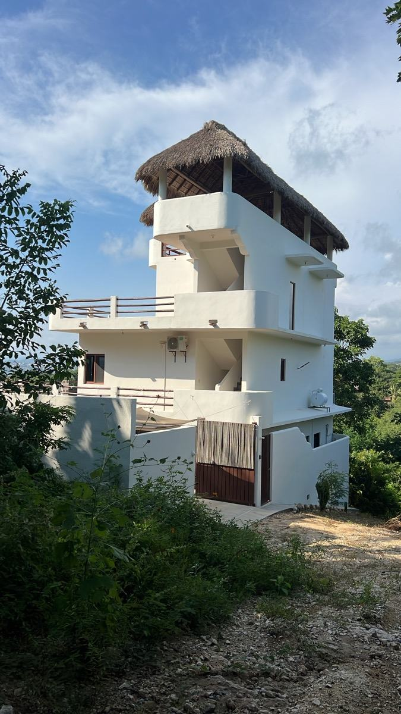
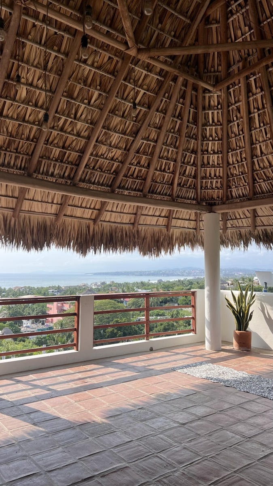
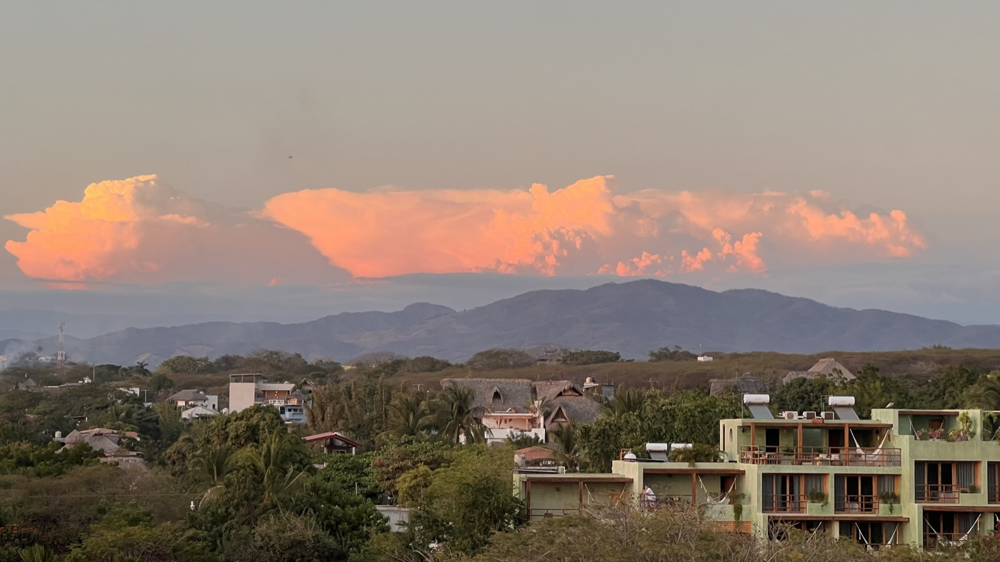
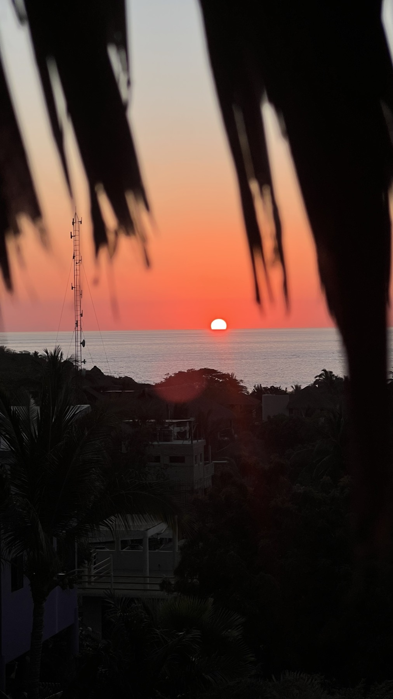
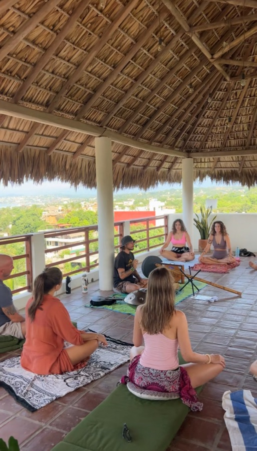
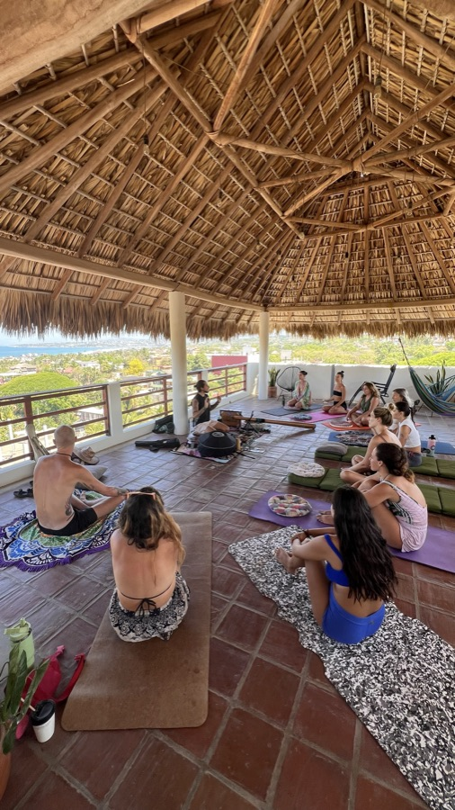

The house in the clouds. Ocean views from every room, deep quiet, and the best view in Puerto. We're so glad you're here.
"This has been our home for nearly two years. We built it around the things that actually make a stay feel good: ocean from every window, real quiet, clean air, deep sleep. It's a living, intentional home, not a rental. Treat it like yours, rest deeply, and let Puerto work on you. — Trevor"
The access is a little hidden — first-timers often feel like they've taken a wrong turn. You haven't. Keep following the path down. It opens up to the house, and when it does, you'll understand why immediately.

Most places forget the things that actually make a stay feel good. We didn't.

Message Trevor directly — he'll sort it personally.


Sit, work, breakfast and good coffee. A solid base for a morning.
📍 MapA cute spot to read or journal with a friend. Raw cow milk and nut milks made in-house. Very organic. Not a work spot.
📍 MapWeekends only. No website, no real online presence — until recently they weren't even on Maps. The kind of place you only knew about if someone local told you. We've been everywhere. This is the best quesabirria in Puerto.
📍 MapIn Lázaro Cárdenas. A bit of a trip — you'll want a scooter. Cheap and incredible. Worth every minute.
📍 MapGreat go-to for dinner. Good vibes and atmosphere. Often a line — plan accordingly.
📍 Map

The upstairs palapa is our gathering space — yoga, meditation, and community events happen here. The house occasionally hosts ceremonies and gatherings through Sacred Journeys. Ask us what's on while you're here.
For daily yoga and wellness events around town:
💬 Join the Puerto events chatTrevor's a message away — before, during, or after your stay.
💬 Message Trevor on WhatsAppIf Casa Las Nubes gave you something — rest, perspective, a good memory — a few kind words in a review would mean a lot. No pressure, no rush. Only if it felt worth it. Thank you for being here. 🌊